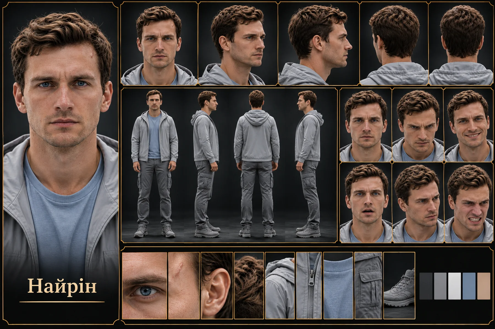

ОСНОВНА ІНФОРМАЦІЯ
Рідкісна здатність читати мислефон
Найрін — характерник Нульового плану. Він єдиний серед характерників цього плану, хто вміє повноцінно читати мислефон іншої людини. Йдеться не лише про вловлювання емоцій чи окремих образів: Найрін здатний бачити зв’язки між думками, приховані реакції, внутрішні суперечності та справжні мотиви співрозмовника.
Ця здатність не приносить йому радості. З роками Найрін звик оцінювати не тільки сказане, а й те, що люди намагаються приховати — іноді навіть від самих себе.
Ім’я: Найрін
Світ: Нульовий план
Статус: характерник
Особлива здатність: повноцінне читання мислефону
Родина: молодший брат Зайрін
Роль у сюжеті: допомагає Дмитрові опановувати мислезв’язок
МИНУЛЕ ТА РОЗЛУКА
Двадцять років пошуків
Коли Найрінові ледь виповнилося дванадцять, авіакатастрофа забрала обох батьків. Відтоді він фактично став опікуном молодшого брата Зайріна: дбав про побут, навчання й підтримував його після втрати родини.
Пізніше брати опинилися далеко один від одного. Найрін провів десять років у чужому селі, п’ять років поруч із Майором, пережив Велику Втрату, а потім ще п’ять років мандрував різними світами. Кожен новий населений світ залишав йому надію, що Зайрін може бути десь поруч.
ПОВЕРНЕННЯ
Зустріч із братом
Після довгої розлуки Найрін чує голос Зайріна через мислезв’язок. Спершу він ледве може відповісти: усвідомлення, що брат живий, стає сильнішим за слова. Зайрін просить його залишитися на місці, боячись знову втратити брата.
Ця зустріч завершує двадцятирічний період розлуки й пошуків.
НАВЧАННЯ ДМИТРА
Практика мислезв’язку
Після ініціації Дмитра Найрін допомагає йому освоїтися на станції та пояснює можливості мислезв’язку. Під час прогулянки він дає Дмитрові короткі практичні вправи: відокремити потрібний сигнал, передати коротке повідомлення й знайти конкретну людину.
У спілкуванні Найрін стриманий і насторожений. Він уважно придивляється до незнайомців, помічає невідповідності в їхній поведінці й не поспішає довіряти словам.